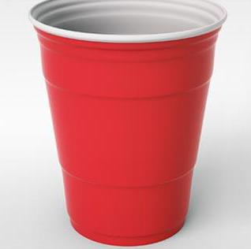

|
Listed are the rules for a game of Beer Pong, as assumed by Pong Tracker. Rules may be modified by the teams playing.
Gameplay
-
To determine the first team to shoot, players participate in eye-to-eye. Eye-to-eye consists of a member from each team shooting simultaneously at the opposing team's cups while making full eye contact with the opposing shooter.
-
One person from each team begins. After each failed attempt, the two team members swap places.
-
When a ball is successfully sunk, the scoring team is awarded the first shot. The cup that is sunk is not counted during eye-to-eye.
-
If both teams hit their eye-to-eye in a given turn, eye-to-eye resumes until only one team scores.
-
Teams take turns attempting to throw the ping pong ball into the cups of the opposing team. The team who is currently shooting is called the shooting team. The team who is being shot at is called the defending team.
-
When a ball has been sunk in a cup, that cup is removed from the table by the defending team. The defending team must drink the contents of that cup in a timely fashion (see Ending a Game).
-
If both members of the shooting team sink any two of the defending team's cups in one turn, they shoot again.
-
After a shot, the ball spins in the rim of the defending team's cup, the defending team can attempt to blow the ball out of the cup. If the ball is ejected and remains dry, no cup is removed.
-
An air ball is a shot that does not hit the table, nor any cup on the table.
-
If the first shooter air balls, then the second shooter must forfeit their shot.
-
If the second shooter air balls, then play resumes as though the turn ended normally.
-
If the ball rolls or bounces back to the shooting team on the table (never once touching the ground), a member of the shooting team can attempt a trick shot.
-
A trick shot is any shot containing either multi-directional trajectory or non-standard origination.
-
Bouncing the ball off an adjacent wall.
-
Throwing the ball facing the opposite direction of the table.
-
A trick shot does not follow the standard rules for shooting, such as air ball.
-
A trick shot can not be disrupted by the defending team.
-
Each team is entitled to one re-rack at any point during the game. A re-rack is a request to shuffle the orientation of the remaining cups of the opposing team.
-
A bounce shot counts as two cups sunk. A bounce shot hits the table before entering a cup. The sunk cup and another chosen by the scoring team are removed.
-
The defending team can attempt to disrupt the ball after it has made contact with the table.
-
If two non-bounce shots hit the same cup, then the sunk cup, and another selected by the scoring team are removed.
-
A party foul is any infringement on the rules of the game. In particular:
-
Any knocking over of a cup is considered a party foul. All disrupted cups are to be removed and are considered scored on by the opposing team.
-
If the ball is disrupted in any way (that is not otherwise stated in the above rules) by the defending team, a cup is removed from the defending team and is considered scored on by the shooting team.
Ending a Game
-
A game is over when a team's cups are all removed from the table.
-
Before the game is complete, the team with no remaining cups is eligible for redemption.
-
If a team is sucessful, then the game resumes, with each team having three cups.
-
The objective of redemption is to sink the opposing team's remaining cups.
-
Both players on the redeeming team keep shooting until they miss.
-
If one player misses, the other continues to shoot.
-
A team is not eligible for redemption if:
-
Both players on the shooting team sink the defending team's remaining cup.
-
The remaining cup is sunk via a bounce shot.
-
A cup in the hand of a player is sunk (for example, before the player drinks).
-
There is beverage remaining in the cup.
-
The scoring team is automatically victorious.
Appendix
| Term |
Definition |
| Air ball |
A shot that misses the table altogether. |
| Bounce shot |
A shot that hits the table before entering a cup. |
| Defending team |
The team who is not currently in possession of the ping pong balls. |
| Eye-to-eye |
A means of deciding the first team to shoot. Consists of a member of each team simultaneously shooting while making full eye contact with the other party. Should a cup be scored, the offending party is awarded the first shot. |
| Party foul |
An infringement on the rules of the game, or knocking over a cup, spilling its contents. |
| Re-rack |
A request to shuffle the orientation of the remaining cups on the opposing side. |
| Redemption |
A chance for the losing team to come back. |
| Session |
The period from which the user logs in, to when the user either logs out, or closes the internet browser. |
| Shooting team |
The team who is currently in possession of the ping pong balls. |
| Solo cup |
Standard cup for Beer Pong

|
| Trick shot |
Any shot containing either multi-directional trajectory or non-standard origination. |
|